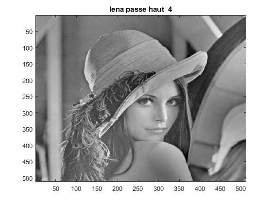

Contents
%*****************************************************************%% %** Mami FOFANA & Sanoussi FOFANA **% %** TP2 DCT transform *%% %*****************************************************************%% clear all; close all; clc;
LENA
%%%%%%%%%%%%%%%%%%%%%%% LENA %%%%%%%%%%%%%%%%%%%%%%%%%%%%%%%%%%%%%
lena = imread('lena.jpg'); lena = double(lena); lena_dct = dct2(lena); figure(); imagesc(lena); colormap(gray); title('Original lena') figure(); imagesc(lena_dct); colormap(gray); title('Transformation DCT de lena');

Filtre passe bas lena
********** Filtrage passe Bas ***************%%%%%%%%
%%%%%%%%%%%%%%%%%%% k=256,128,64,32,16 %%%%%%%%%%%%%%%%%%%%%% %************************************************************ %****************** k = 256 ********************************% lena_dct_passeBas256 = passeBas(lena_dct,256); lena_passeBas256 = idct2(lena_dct_passeBas256); figure imagesc(lena_passeBas256); colormap(gray); title('lena passe Bas 256'); %****************** k = 128 ********************************% lena_dct_passeBas128 = passeBas(lena_dct,128); lena_passeBas128 = idct2(lena_dct_passeBas128); figure imagesc(lena_passeBas128); colormap(gray); title('lena passe Bas 128'); %****************** k = 64 ********************************% lena_dct_passeBas64 = passeBas(lena_dct,64); lena_passeBas64 = idct2(lena_dct_passeBas64); figure imagesc(lena_passeBas64); colormap(gray); title('lena filtre passe Bas 64'); %****************** k = 32 ************************************% lena_dct_passeBas32 = passeBas(lena_dct,32); lena_passeBas32 = idct2(lena_dct_passeBas32); figure imagesc(lena_passeBas32); colormap(gray); title('lena filtre passe bas 32'); %****************** k = 18 ********************************% lena_dct_passeBas16 = passeBas(lena_dct,16); lena_passeBas16 = idct2(lena_dct_passeBas16); figure(); imagesc(lena_passeBas16); colormap(gray); title('lena lowpass 16');
Filtrage passe haut
***************** Filtrage passe haut ***** *******************%%
%*********************** k=2, 4, 8, 16, 32 *******************************% %*************************************************************************% %****************** k = 2 ************************************************% lena_dct_passeHaut2 = passeHaut(lena_dct,2); lena_passeHaut2 = idct2(lena_dct_passeHaut2); figure(); imagesc(lena_passeHaut2); colormap(gray); title('lena passe haut pour k=2'); %****************** k = 4 ************************************************% lena_dct_passeHaut4 = passeHaut(lena_dct,4); lena_passeHaut4 = idct2(lena_dct_passeHaut4); figure(); imagesc(lena_passeHaut4); colormap(gray); title('lena passe haut 4'); %****************** k = 8 ************************************************% lena_dct_passeHaut8 = passeHaut(lena_dct,8); lena_passeHaut8 = idct2(lena_dct_passeHaut8); figure(); imagesc(lena_passeHaut8); colormap(gray); title('lena passe haut 8'); %****************** k = 16 ************************************************% lena_dct_passeHaut16 = passeHaut(lena_dct,16); lena_passeHaut16 = idct2(lena_dct_passeHaut16); figure(); imagesc(lena_passeHaut16); colormap(gray); title('lena passe haut 16'); %****************** k = 32 ************************************************% lena_dct_passeHaut32 = passeHaut(lena_dct,32); lena_passeHaut32 = idct2(lena_dct_passeHaut32); figure(); imagesc(lena_passeHaut32); colormap(gray); title('lena passe haut 32');
BABOON
************************* BABOON ***********************************%%
%**************************************************************************% baboon = imread('Baboon.jpg'); baboon = double(baboon); baboon_dct = dct2(baboon); figure(); imagesc(baboon); colormap(gray); title('Originale baboon') figure(); imagesc(baboon_dct); colormap(gray); title('Transformation DCT de baboon');
Filtrage passe Bas
********** Filtrage passe Bas ***************%%%%%%%%
%%%%%%%%%%%%%%%%%%% k=256,128,64,32,16 %%%%%%%%%%%%%%%%%%%%%% %************************************************************ %****************** k = 256 ********************************% baboon_dct_passeBas256 = passeBas(baboon_dct,256); baboon_passeBas256 = idct2(baboon_dct_passeBas256); figure imagesc(baboon_passeBas256); colormap(gray); title('baboon passe Bas 256'); %****************** k = 128 ********************************% baboon_dct_passeBas128 = passeBas(baboon_dct,128); baboon_passeBas128 = idct2(baboon_dct_passeBas128); figure imagesc(baboon_passeBas128); colormap(gray); title('baboon passe Bas 128'); %****************** k = 64 ********************************% baboon_dct_passeBas64 = passeBas(baboon_dct,64); baboon_passeBas64 = idct2(baboon_dct_passeBas64); figure imagesc(baboon_passeBas64); colormap(gray); title('baboon filtre passe Bas 64'); %****************** k = 32 ************************************% baboon_dct_passeBas32 = passeBas(baboon_dct,32); baboon_passeBas32 = idct2(baboon_dct_passeBas32); figure imagesc(baboon_passeBas32); colormap(gray); title('baboon filtre passe bas 32'); %****************** k = 18 ********************************% baboon_dct_passeBas16 = passeBas(baboon_dct,16); baboon_passeBas16 = idct2(baboon_dct_passeBas16); figure(); imagesc(baboon_passeBas16); colormap(gray); title('baboon passe bas 16');

Filtrage passe Haut
***************** Filtrage passe haut ***** *******************%%
%*********************** k=2, 4, 8, 16, 32 *******************************% %*************************************************************************% %****************** k = 2 ************************************************% baboon_dct_passeHaut2 = passeHaut(baboon_dct,2); baboon_passeHaut2 = idct2(baboon_dct_passeHaut2); figure(); imagesc(baboon_passeHaut2); colormap(gray); title('baboon passe haut pour k=2'); %****************** k = 4 ************************************************% baboon_dct_passeHaut4 = passeHaut(baboon_dct,4); baboon_passeHaut4 = idct2(baboon_dct_passeHaut4); figure(); imagesc(baboon_passeHaut4); colormap(gray); title('baboon passe haut 4'); %****************** k = 8 ************************************************% baboon_dct_passeHaut8 = passeHaut(baboon_dct,8); baboon_passeHaut8 = idct2(baboon_dct_passeHaut8); figure(); imagesc(baboon_passeHaut8); colormap(gray); title('baboon passe haut 8'); %****************** k = 16 ************************************************% baboon_dct_passeHaut16 = passeHaut(baboon_dct,16); baboon_passeHaut16 = idct2(baboon_dct_passeHaut16); figure(); imagesc(baboon_passeHaut16); colormap(gray); title('baboon passe haut 16'); %****************** k = 32 ************************************************% baboon_dct_passeHaut32 = passeHaut(baboon_dct,32); baboon_passeHaut32 = idct2(baboon_dct_passeHaut32); figure(); imagesc(baboon_passeHaut32); colormap(gray); title('baboon passe haut 32');
Probabilité
%************************************************************************* % ********* Probabilité ******************************* %************************************************************************* T = 1000; x = randn(1,T); figure; plot(x); figure(); hist(x); z = 2*x + 1; figure(); hist(z); %%Definition des fonctions % ***************** Definition des fonctions *****************
Fonction passeBas:
cette fonction prend en paramètre l'image et la taille de masque de filtrage puis retourne l'image filtré
Fonction passeHaut :
Similaire principe avec le filtre passe bas , mais il retourne l'image filtré en haute frréquence.